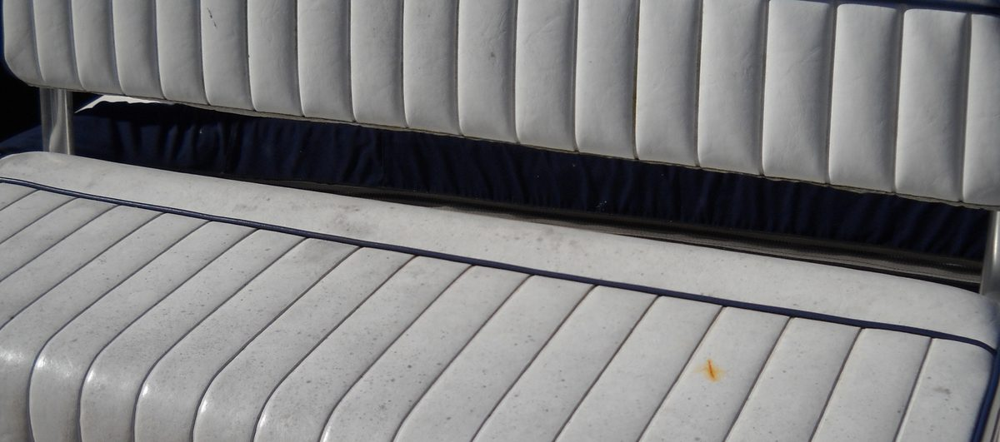
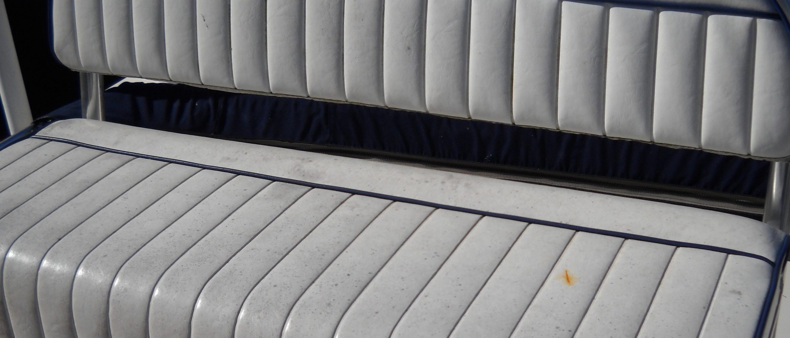
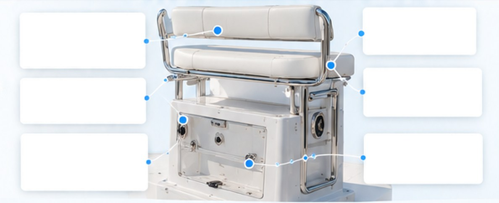
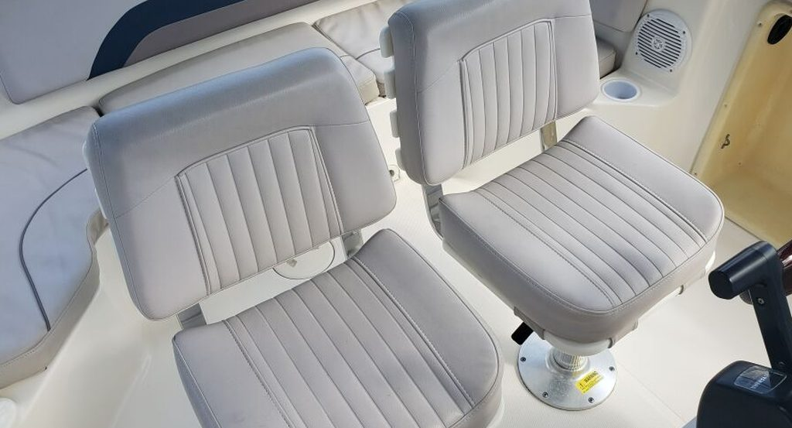
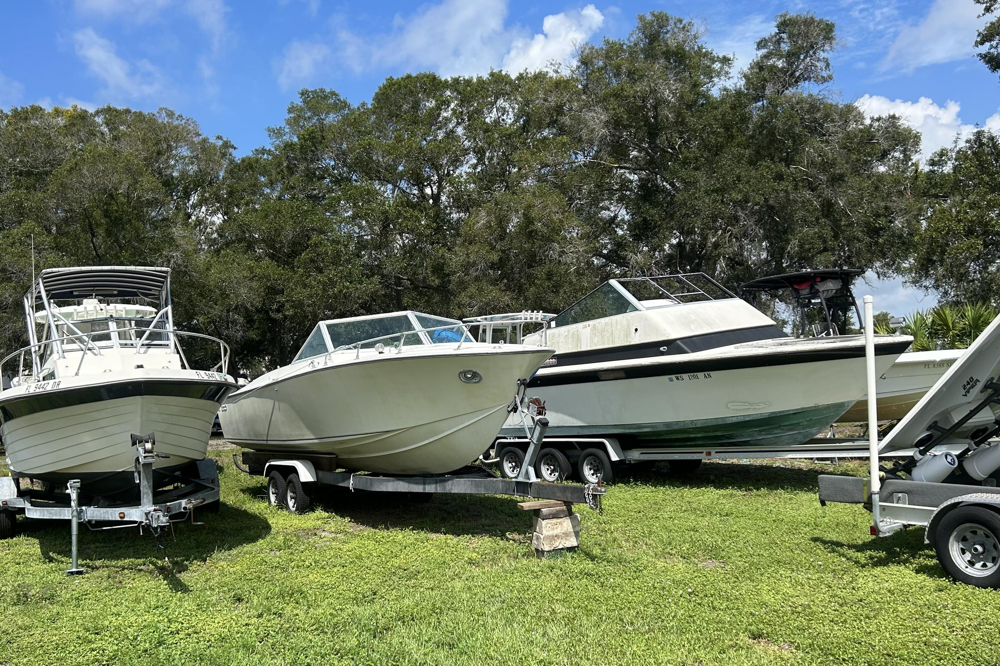

Fiberglass Seat Base Repair
Fix cracks, breaks, and
water damage.

We repair, reinforce, or custom build fiberglass seating bases, leaning posts, and onboard structures to keep your boat strong, functional, and looking great.
Seating bases, leaning posts, and custom fiberglass structures take a lot of abuse from sun, water, and constant use. Over time they can crack, become loose, or suffer from water intrusion. We repair damaged fiberglass, reinforce weak areas, and
build custom seating bases and structures to fit your boat
and your needs.


We follow a detailed process to ensure your seating bases and custom structures are strong, functional, and built to last.
We check for cracks, water intrusion, and structural issues.
We repair existing
damage or fabricate new structures as needed.
We add reinforcement, install hardware, and finish with matching gelcoat.
We inspect for strength, fit, and appearance to ensure long-lasting performance.
With over 50 years of experience, we provide reliable,
high-quality fiberglass and marine repair services. Our team
is known for honest work, attention to detail, and results that last.
Yes. We grind out the cracked or broken fiberglass, rebuild it with new laminate, and refinish it in gelcoat. If water has soaked a wood core inside, we cut out the wet core and replace it so the crack doesn’t come back.
Yes. We build new seat bases, leaning posts and other onboard structures to fit your deck layout, with storage, cooler space, rod holders or tackle drawers built in if you want them.
Yes. We tint the gelcoat to your boat as it looks today, including any fading, so the repair or new structure blends in with the rest of the boat.
It should be stronger. We bond new fiberglass to sound laminate and reinforce the areas that failed, such as mounting points, corners and hinge or latch areas, with marine-grade materials.
A crack or corner repair is often done in a few days. A custom seat base or leaning post usually takes a few weeks, because the laminate and gelcoat need time to cure between stages. We’ll give you a timeline with your quote.
Pricing depends on the size of the structure, the extent of the damage and any storage or hardware you add. Send us a few photos and we’ll give you a free, no-obligation quote.

Get a free quote and keep your boat strong, functional, and looking great.
Got a cracked seat base or planning a new leaning post, need a quote, or ready to schedule? Fill out the form or give us a call — we’ll get back to you as soon as possible. Your boat deserves the best, and we’re here to make it happen.
Tell us about your boat and the damage. We’ll get back to you quickly.

Captain Levi is an AI assistant. Chats may be saved so our crew can follow up. Nothing here is a confirmed quote. Privacy